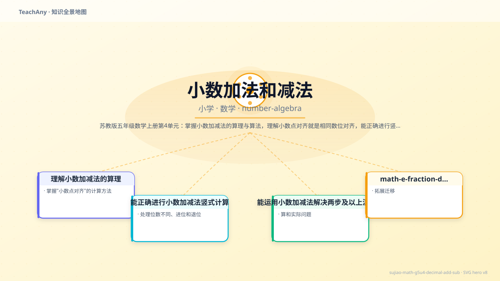
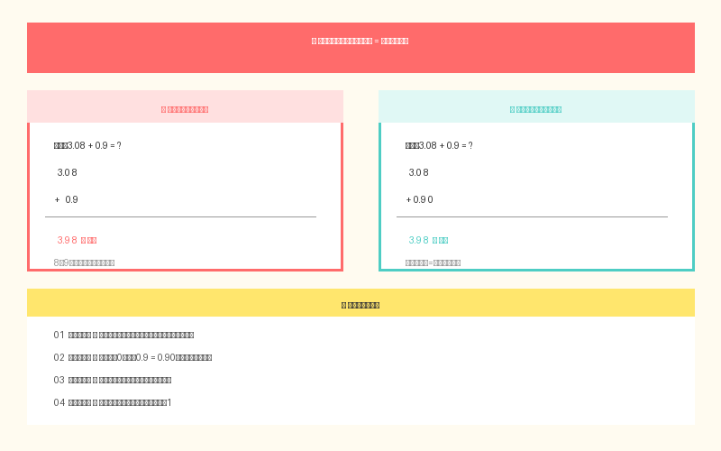
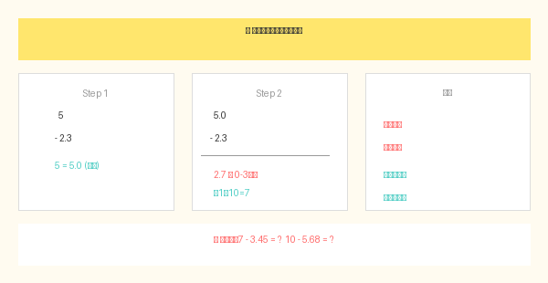
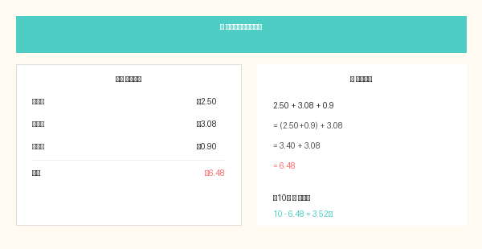

3.5 + 2 = 5.5 还是 3.7？小数点到底该怎样对齐？

选一个你关心的问题，后面的内容会围绕它展开。
选择或输入后，本课会围绕你的问题展开。
📚 已经学过：小数的意义和性质（三年级）、万以内加减法（三年级）
先试试看，你已经会哪些了？
第1题：计算 2.3 + 1.5 = ?
第2题：计算 5 - 2.3 = ?
第3题：小明有3.5元，买笔记本花1.8元，还剩多少？
✅ 已经知道：整数加减法竖式要末位对齐（个位对个位，十位对十位）。
⚠️ 但问题是：小数有小数点，末位对齐会算错！比如 2.3 + 1.5 末位对齐 → 3+5=8 ✓，2+1=3 ✓，但换一个题 3.08 + 0.9 呢？
💡 所以要学：小数加法要对齐小数点，让相同数位对齐，然后再相加。

❌ 错误（末位对齐）
2.3 + 1.5 ────── 3.8 ← 巧合对了！
但换个数就错！
✅ 正确（小数点对齐）
2.3 + 1.5 ────── 3.8 ← 个位对个位，十分位对十分位
小数点对齐 = 相同数位对齐！
🧪 小测试：3.08 + 0.9 = ?
比如 2.35 + 1.8，一个两位小数，一个一位小数，怎么对齐？
🔑 秘诀：位数不同时，在末尾补"0"凑齐！
2.35 → 2.35
+ 1.8 → + 1.80 ← 补一个0！
────── ──────
4.15
练习：4.6 + 3.27 = ?
自己算一算，然后点击「检查答案」
小数减法和加法一样要对齐小数点，但减法还需要退位，特别是整数减小数！

步骤①：整数补小数点 步骤②：退位借1
5 → 5.0 5.0
- 2.3 → - 2.3 - 2.3
────── ────── ──────
2.7
步骤③：十分位 0-3 不够 → 向个位借1 → 10-3=7
步骤④：个位 5 被借走1剩4 → 4-2=2
步骤⑤：点上小数点 → 2.7 ✅
练习：7.2 - 3.45 = ?
自己算一算，然后点击「检查答案」
把下面的数字拖到竖式中正确的位置，对齐小数点才能算对！
💡 点击一个数字，再点击竖式中的位置把它放进去。对齐小数点！
把数字拖入正确的位置，对齐小数点！
当遇到连加、连减或加减混合时，从左到右依次计算！
第一步：12.8 - 3.6 第二步：9.2 + 2.4
12.8 9.2
- 3.6 + 2.4
────── ──────
9.2 11.6
答案：12.8 - 3.6 + 2.4 = 11.6 ✅
练习：4.5 + 3.27 - 2.8 = ?
从左到右，分两步算！

小红买一本笔记本 4.8 元，一支钢笔 6.5 元，她付了 20 元，应找回多少钱？
提示：先算一共花了多少 → 4.8 + 6.5
小明身高 1.35 米，小华身高 1.4 米。谁更高？高多少米？
提示：1.4米 = 1.40米，然后对齐小数点相减
一袋薯片 2.5 元，一瓶饮料 3.08 元，一盒饼干 0.9 元，一共需要多少钱？
提示：把 2.5 补成 2.50，0.9 补成 0.90
和前测类似的题型，但数字变了哦～用今天学的方法来算！
第1题：计算 4.6 + 2.8 = ?
第2题：计算 8 - 4.6 = ?
第3题：一桶油重5.3kg，用掉1.85kg，还剩多少kg？
回到开头的问题：3.5 + 2 = 5.5 ✓，不是3.7！ 因为要对齐小数点，把2看成2.0，3.5 + 2.0 = 5.5。
🎉 接下来你可以挑战小数乘除法（五年级下册），它们也都是从"小数点对齐"这个核心出发的！
本节点在数学知识树中的位置：前置知识、后续拓展和同领域知识。